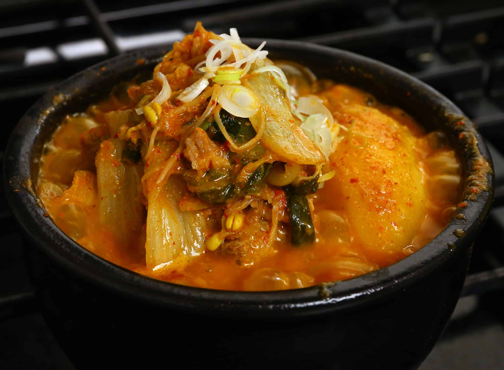

Pork Bone Soup

Gamja-tang or pork back-bone stew is a spicy Korean soup made from the
spine or neck bones of a pig. It is hot and savory. It is especially
delicous becasue how the pork bone meat is filled with the taste of other
vegetables and it is perfect to eat with a bowl of hot rice. Usually
Korean people eat it as hangover soup too.
Ingredients
- pork bones
- potatoes
- perilla leaves
- green onions
- hot peppers
- perilla seeds
Steps
-
Soak pork backbones in cold water for 1–2 hours to remove blood,
changing the water occasionally.
-
boil the bones for 6–10 minutes with bay leaves or soju to remove
impurities and odor, then rinse each bone thoroughly.
-
Place cleaned bones back in a large pot, cover with fresh water, and
simmer with onions, ginger, and garlic for 45 minutes to 1 hour.
-
Add potato chunks, cabbage (or dried radish greens), and the seasoning
paste (gochugaru, soy sauce, soybean paste, garlic).
-
Simmer for another 30–60 minutes until the meat is very tender and
potatoes are cooked.
-
Top with perilla leaves, green onions, and perilla seed powder before
serving.
Home